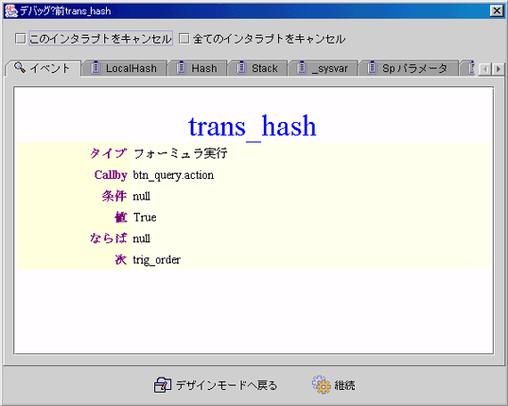

|
6.5 フォームデバッグとイベント中断 (form debug and event interrupt) デバッグ情報パネル (debug information panel)
デバッグ情報パネル (debug information panel) · 中断のキャンセル (cancel this interrupt)：実行を継続にした後，この中断点で再び中断しません。 · 全部中断のキャンセル (cancel all interrupts)：全部中断をキャンセルします。 · デザインモードへ戻り (back to design mode)：実行テストを終え，デザインモードに戻リます。 · 継続 (continue)：実行テストの継続。 · イベント (event)：イベントプロパティ値。 · ローカルハッシュ− (LocalHash)：LocalHash のキー(key)と値(value)。 · ハッシュ−(Hash)：Hash のキー (key)と値 (value)。 · Stack：Stack の値 (value)。 · システムパラメーター (_sysvar)：_sysvar1 から _sysvar8 までの値。 · ストアドプロシージャ転送パラメーター(Sp Param)：ストアドプロシージャ (stored procedure) 転送されるパラメーター。 · システムハッシュ−SysHash：SysHash のキー(key)と値 (value)。 · Servlet：Servlet に転送されるパラメーター。

Copyright © 2001~ 2004 Probe Technology . All Rights Reserved. Questions, comments, and suggestions to Service@probe.com.tw |